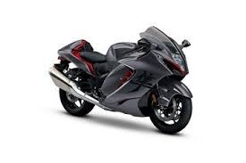

Today, almost all commercially available motorcycles are driven by conventional gasoline internal combustion engines, increasingly 4-strokes in all size ranges. This is because 4 stroke engines are more fuel efficient, cause less emissions and have a longer life than 2-stroke engines. In a 4-stroke engine, the working cycle is completed in 4-strokes of the piston or two revolutions of the crankshaft. This is achieved by carrying out suction, compression, expansion and exhaust processes in each stroke. The 4-strokes of a petrol engine sucking fuel-air mixture are described below. Suction or Charge Stroke: In this stroke, the inlet valve opens and a mixture of fuel and air is forced by atmospheric pressure into the cylinder through the intake port. The piston descends from the top of the cylinder to the bottom of the cylinder. Today, almost all commercially available motorcycles are driven by conventional gasoline internal combustion engines, increasingly 4-strokes in all size ranges. This is because 4 stroke engines are more fuel efficient, cause less emissions and have a longer life than 2-stroke engines. In a 4-stroke engine, the working cycle is completed in 4-strokes of the piston or two revolutions of the crankshaft. This is achieved by carrying out suction, compression, expansion and exhaust processes in each stroke. The 4-strokes of a petrol engine sucking fuel-air mixture are described below. Suction or Charge Stroke: In this stroke, the inlet valve opens and a mixture of fuel and air is forced by atmospheric pressure into the cylinder through the intake port. The piston descends from the top of the cylinder to the bottom of the cylinder. back to top Today, almost all commercially available motorcycles are driven by conventional gasoline internal combustion engines, increasingly 4-strokes in all size ranges. This is because 4 stroke engines are more fuel efficient, cause less emissions and have a longer life than 2-stroke engines. In a 4-stroke engine, the working cycle is completed in 4-strokes of the piston or two revolutions of the crankshaft. This is achieved by carrying out suction, compression, expansion and exhaust processes in each stroke. The 4-strokes of a petrol engine sucking fuel-air mixture are described below. Suction or Charge Stroke: In this stroke, the inlet valve opens and a mixture of fuel and air is forced by atmospheric pressure into the cylinder through the intake port. The piston descends from the top of the cylinder to the bottom of the cylinder. back to top  Today, almost all commercially available motorcycles are driven by conventional gasoline internal combustion engines, increasingly 4-strokes in all size ranges. This is because 4 stroke engines are more fuel efficient, cause less emissions and have a longer life than 2-stroke engines. In a 4-stroke engine, the working cycle is completed in 4-strokes of the piston or two revolutions of the crankshaft. This is achieved by carrying out suction, compression, expansion and exhaust processes in each stroke. The 4-strokes of a petrol engine sucking fuel-air mixture are described below. Suction or Charge Stroke: In this stroke, the inlet valve opens and a mixture of fuel and air is forced by atmospheric pressure into the cylinder through the intake port. The piston descends from the top of the cylinder to the bottom of the cylinder. back to top